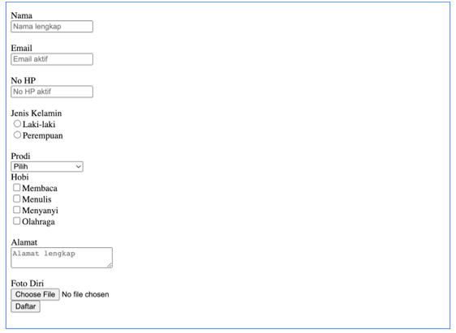

Data Diri
- Nama: Elna Paonisma
- NIM: 21TI010
- Kelas: FSWD1
- ID Kegiatan: 7391804
Soal Pertemuan 6
- Buatlah dokumen index.html pada perangkat masing-masing.
- Buat satu file dokumen form.html dengan ketentuan form sebagai berikut: Form.html
- 
- Masukkan hasil pekerjaan ke dalam repositori GitLab masing-masing dengan nama TugasSIB24-[nama-pendek].
- Di dalam repositori, buatlah satu link pada file index.html yang mengarah ke file jsdasar.html. Lakukan contoh-contoh fundamental JavaScript sebagaimana yang disampaikan di slide, lalu push ke repositori.
- Di dalam file index.html, buat satu link yang mengarah ke file form.html.
- Edit file index.html dan buatlah landing page.
- Gunakan JavaScript untuk membuat tampilan landing menjadi lebih interaktif, misalnya menggunakan carousel.
- Pastikan tampilan dapat dibuka pada GitHub Pages.
- Jangan lupa untuk submit link repositori ke Sinauo.
- Screenshot tampilan landing page dan upload berupa file PDF di Sinauo.